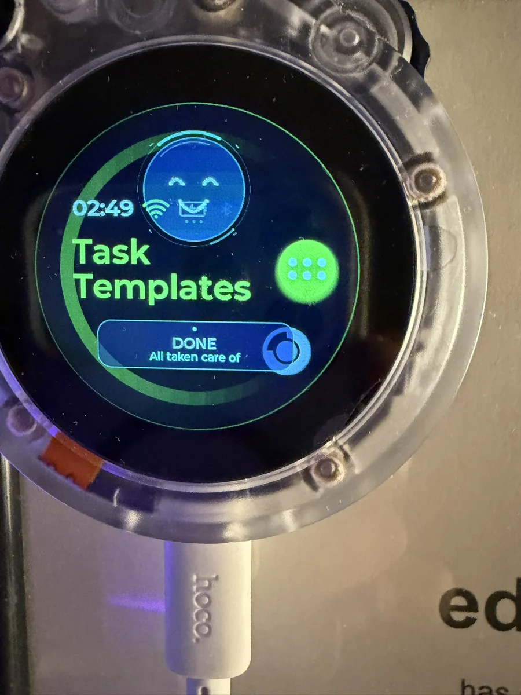
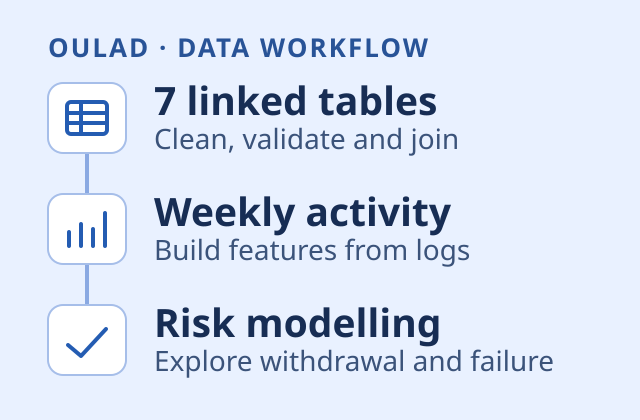
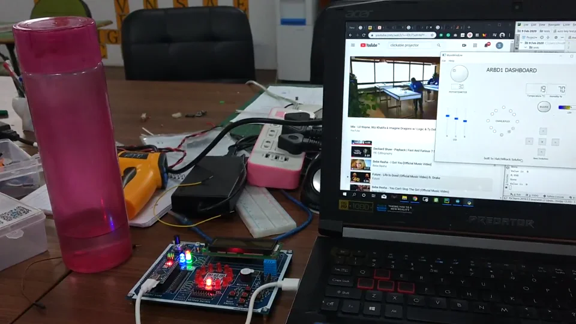

Shashikant Chaudhary · Adelaide, Australia
Building AI & data tools.
Teaching maths.
Research and projects in learning analytics, language models and connected hardware.
Second Valley Beach · Shav Bird · CC BY 3.0 · pixel art adaptation
My education
Things I’ve worked on
All projects
AI & hardware
Hermes Watcher
A physical status display for an AI agent.
Research & data
Understanding student success
Learning analytics and predictive modelling with OULAD.
Firmware & Python
ARBD1: board to dashboard
Connecting hardware to software for live sensor monitoring.Study plan
Learn AI in 2027
A parallel study plan covering Python, maths, language models and agents.
Explore the study planJarvis
Portfolio guide
Voice
Jarvis · voice ready
Calm British delivery